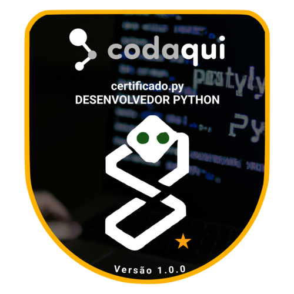

Python é uma linguagem de programação Open-Source (código aberto) de propósito geral usado bastante em data science, machine learning, desenvolvimento de web, desenvolvimento de aplicativos, automação de scripts, fintechs e mais. Essa linguagem de programação foi lançada por Guido van Rossum em 1991.
No menu esquerdo você pode ir avançando nos topicos de estudos e ao final de muitos tópicos verá uma caixa como a seguinte:
# This will get executed each time the exercise gets initialized
b = 6
# Remova o # da linha abaixo!
# print("Hello World!")
print("Hello World!")
test_function("print")
success_msg("Parabéns! Você imprimiu 'Hello World!' e acabou de rodar seu primeiro código Python!")
A partir dessa caixa será possível colocar em prática o que foi aprendido no tópico e também se preparar para a certificação.
Gosta de estudar com vídeos? Esse é um video do Programador Python de quase 30 minutos! Vai apresentar um conceito geral da linguagem! Recomendamos ir para o próximo tópico e salvar esse vídeo como referência para mais tarde.
`
Uma variável é um espaço na memória do computador destinado a um dado que é alterado durante a execução do algoritmo. Para funcionar corretamente, as variáveis precisam ser definidas por nomes e tipos. Nesta aula iremos estudar os tipos de variáveis e suas diferenças.
Materiais de Referência:
Material Complementar:
As estruturas condicionais permitem que um programa execute diferentes comandos de acordo com as condições estabelecidas. Aqui, estudaremos suas aplicações e formatos.
Materiais de Referência:
São estruturas que permitem a execução de instruções repetidas vezes, até que uma condição seja atingida.
Em casos de repetição de comandos, ou um conjunto, é normal que se use "laços de repetiçao" que executam um bloco de códigos repetidas vezes, enquanto certa condição é atendida.
Exempls:
lista_de_palavras = ["Palavra1", "Palavra2"]
for palavra in lista_de_palavras:
print(palavra)
Materiais de Referência:
As coleções permitem armazenar múltiplos itens dentro de uma única unidade, que funciona como um container. Neste tópico iremos ver quais são e como usa-las.
Materiais de Referência:
Vídeo Complementar:
Após passarmos pela Seção 7, vamos comentar sobre as Funções em Python. São blocos de códigos que só são executados quando chamados, podemos passar dados (os famosos parâmetros), e depois retornar alguma resposta.
Materiais de Referência:
Vídeo Complementar:
As Comprehensions em Python serve para escrever uma nova lista baseada em outra lista existente de uma maneira mais curta, deixando mais fácil de entender e mais simples de ler o código.
Materiais de Referência:
Uma expressão lambda permite escrever funções anônimas/sem nome usando apenas uma linha de código. As funções integradas são funções que permitem obter alguma informação a respeito de uma variável de tipo padrão ou transformar o tipo de uma variável. Neste tópico, podemos aprender mais profundamente sobre ambas.
Materiais de Referência:
Debugar é encontrar e corrigir erros de um programa. Nesse tópico iremos ver como tratar erros e exceções.
Materiais de Referência:
Módulos em Python são arquivos contendo definições e comandos a serem utilizados em outros programas na mesma linguagem, utilizando a keyword import.
Conforme a introdução do segundo link de estudo, a importação de módulos só é possível enquanto dentro do mesmo diretório, ou se estiver em uma lista de diretórios dadas pela variável sys.path, começada no diretório atual e procurada na variável PYTHONPATH do Shell, por fim no diretório padrão que depende da instalação.
Leia mais a respeito de módulos nos links de estudo abaixo.
Materiais de Referência:
Os computadores utilizam os arquivos como estruturas de dados, por exemplo, vídeos, imagens e planilhas. Nesta aula, vamos aprender como os programas em Python criam, recuperam, atualizam e processam arquivos de dados, ou seja, manipulam arquivos.
Materiais de Referência:
Iterator em python é um objeto que é usado para iterar sobre objetos iteráveis, como listas, tuplas, dicts e conjuntos. Os geradores em Python são uma maneira simples de criar um objeto iterável sem a necessidade de construí-lo dentro de uma classe. Um objeto iterável consiste em um conjunto finito de dados cujo conteúdo é tratado um elemento por vez, iniciando do primeiro e seguindo até o último, quando a iteração é terminada.
Materiais de Referência:
Saindo dos iteradores e geradores, seguiremos com decoradores em python. Para simplificarmos sua ideia, podemos dizer que eles são funções que modificam a funcionalidade de uma outra função.
Materiais de Referência:
Programação orientada a objetos (POO) é um paradigma de programação baseado no conceito de "objetos", que podem conter dados na forma de campos, também conhecidos como atributos, e códigos, na forma de procedimentos, também conhecidos como métodos.
Materiais de Referência:
Herança é um mecanismo importante quando um grupo de classes apresenta a mesma interface, mas a implementação interna dos métodos é diferente. Polimorfismo é a capacidade que uma subclasse tem de ter métodos com o mesmo nome de sua superclasse, e o programa saber qual método deve ser invocado, especificamente.
Materiais de Referência:
O arquivo CSV (valores separados por vírgulas) é um arquivo de texto com formato específico para possibilitar o salvamento dos dados em um formato estruturado de tabela. O formato JSON (JavaScript Object Notation) é utilizado para estruturar dados em formato de texto e permitir a troca de dados entre aplicações de forma simples, leve e rápida.
Materiais de Referência:
Registrar um momento qualquer no tempo é um requisito comum em todo sistema usual. Esse registro pode ser em data e hora. É comum fazer operações com esses dados, portanto, sua precisão é muito importante.
Materiais de Referência:
Os testes servem para antecipar e corrigir falhas e bugs que apareceriam para o usuário final. Neste tópico iremos apresentar como fazer testes em um programa.
Materiais de Referência:
Neste tópico iremos abordar comandos que podem ser usados para fechar um programa escrito na linguagem Python.
Materiais de Referência:
Quando criamos uma variável em Python, essa variável é armazenada na memória do computador. A alocação de memória pode ser definida como a alocação de um bloco de espaço na memória do computador para um programa. Nesta aula iremos entender como funciona o gerenciamento de memória do computador.
Materiais de Referência:
Neste tópico você vai aprender a como checar o tipo de uma variável em Python, ou seja, saber qual o tipo de dado uma variável contém.
Materiais de Referência:
Há momentos no desenvolvimento de uma aplicação que precisamos interagir com o sistema operacional para acessar diretórios, criar arquivos, executar comandos entre outras ações, e para isso contamos com algumas bibliotecas nativas do Python, como os e subprocess, que nos auxiliam nesses processos.
Materiais de Referência:
Neste tópico será abordado formas de trabalhar com dados provenientes de fontes externas, como um site ou outra aplicação.
O Python disponibiliza nativamente a biblioteca urllib para efetuar requisições a sites, APIs, entre outras, mas existe uma outra biblioteca, de terceiros, chamada requests que é bem mais simples que pode ser utilizada para fazer realizar esse tipo de tarefa.
Materiais de Referência:
Aqui é fornecido guias para a instalação de compiladores de Python.
Materiais de Referência:
Vamos conhecer a versão 3.8 no Python. A nova versão apresenta novas funcionalidades, entre elas estão as expressões de atribuição e os parâmetros apenas posicionais.
Materiais de Referência:
Vamos conhecer a versão 3.9 no Python. A nova versão apresenta novas funcionalidades, entre elas estão os operadores de mesclagem & atualização de dicionário e novos métodos de strings para remover prefixos e sufixos.
Materiais de Referência:
Vamos conhecer a versão 3.10 no Python. A nova versão apresenta novas funcionalidades, entre elas estão a correspondência de padrões estruturais e gerenciadores de contexto entre parênteses.
Materiais de Referência:
Se você deseja alterar algo, inicie uma nova discussão clicando aqui.
Inicialmente a trilha de conteúdos usada foi do curso do Geek University, e posteriormente a @melissarr fez um trabalho de agrupamento e pesquisa dessa trilha em diversos portais. A partir desse trabalho de agrupamento e pesquisa da @melissarr:

Recomendamos que estude antes de se inscrever, e caso tenha qualquer dúvida entre em contato por e-mail contato@codaqui.dev